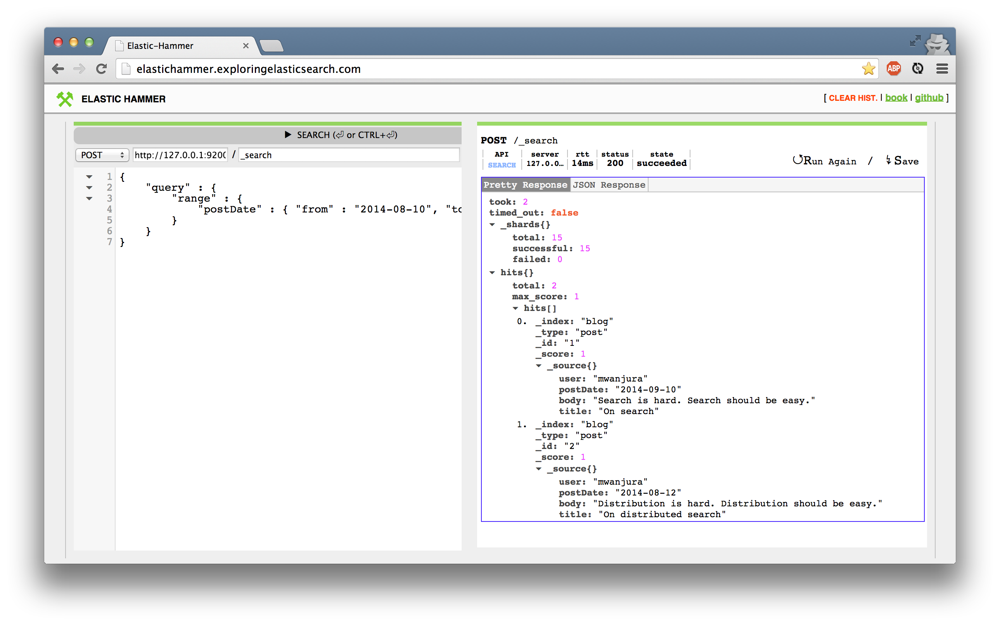

Elasticsearch
You Know, for Search
Elasticsearch presentation 09/14 @ Web-Dev-BBQ Stuttgart/Germany
Markus Wanjura
Head of IT & Development
@ develop4edu GmbH Stuttgart
Let's start!
One of the most common requirement for a modern web application!
▾
Search.
Does the following dialog sound familiar to you?
Customer:
I need a search for my shop?
Me:
Easy! Let's use SQL!
SELECT * FROM produkt
WHERE titel LIKE '%foobar%'
ORDER BY price DESC
LIMIT 1000;
Me:
Customer:
- Can you handle filters?
- How about fuzzy search?
- I need autocompletition?
- Can you show result counts on filters?
- Marketing asked to boost that product XY for a while!
- What about sorting and pagination?
- I want a "Did you mean?" function.
- Does it scale?
- Ops team asked for failover, replication and clustering!
- It has to be blazing fast!
- Could you...
Me: ...
What kind of technology can handle that?
Lucene
- formally: Apache Lucene™
- Open-source search engine.
Do i want to integrate Lucene directly into my webapp?
And manage ALL by my self?
No!
If you don't have to, you won't!
Ok. Got it!
Is there an enterprise ready search server based on lucene?
Elasticsearch
vs.
Apache Solr
I'll keep this part short.
We used a Solr 3.x for a couple of year's.
It was a bit painful and slow development.
It woulnd't be fair to compare a Solr 3.x with an Elasticsearch 1.x.
Solr 4.x and Elasticsearch 1.x are equal competitors
In our infrastructure scaleability is key!
So we decided to move to Elasticsearch.
Our evaluation keypoints were:
- Elasticsearch is the more modern and faster growing ecosystem
- It is designed to be distributed from the ground up
- Friendlier to teams which are used to REST APIs and JSON
- We already use Logstash+Kibana for webserver log aggregation
(with an index amount of hundrets of gigabyte) - Big scale portals like GitHub, XING, SoundCloud use it
If your ecosystem supports Solr more and scaleability is not your biggest keypoint,
I think you'll be very happy with either Solr or Elasticsearch.
You'll find a very good Feature Smackdown at http://solr-vs-elasticsearch.com/
Let's move on
and have some fun with Elasticsearch.
Local installation
(Mac)
$ ruby -e "$(curl -fsSL https://raw.githubusercontent.com/Homebrew/install/master/install)"
$ brew install elasticsearch
$ elasticsearch start(Windows untested)
Download zip from elasticsearch.org...
c:\elasticsearch-{version}bin>service install
Installing service : "elasticsearch-service-x64"
Using JAVA_HOME (64-bit): "c:\jvm\jdk1.7"
The service 'elasticsearch-service-x64' has been installed.http://www.elasticsearch.org/guide/en/elasticsearch/reference/current/setup-service-win.html
DONE!
Open your browser with http://localhost:9200/
Put some data to our index
curl -XPUT 'http://127.0.0.1:9200/blog/post/1' -d '{
"user": "mwanjura",
"postDate": "2014-09-10",
"body": "Search is hard. Search should be easy." ,
"title": "On search"
}'
curl -XPUT 'http://127.0.0.1:9200/blog/post/2' -d '{
"user": "mwanjura",
"postDate": "2014-08-12",
"body": "Distribution is hard. Distribution should be easy." ,
"title": "On distributed search"
}'
curl -XPUT 'http://127.0.0.1:9200/blog/post/3' -d '{
"user": "mwanjura",
"postDate": "2014-07-10",
"body": "We need a new search" ,
"title": "Better search"
}'
Result
Index mapping is dynamically created for you
{"_index":"blog","_type":"post","_id":"1","_version":1,"created":true}
{"_index":"blog","_type":"post","_id":"2","_version":1,"created":true}
{"_index":"blog","_type":"post","_id":"3","_version":1,"created":true}
Index mapping
curl -XGET 'http://127.0.0.1:9200/blog/_mapping?pretty=true'{
"blog" : {
"mappings" : {
"post" : {
"properties" : {
"body" : { "type" : "string" },
"postDate" : { "type" : "date", "format" : "dateOptionalTime" },
"title" : { "type" : "string" },
"user" : { "type" : "string" }
}
}
}
}
}Get some specific data by id
curl -XGET 'http://127.0.0.1:9200/blog/post/2?pretty=true'{
"_index" : "blog",
"_type" : "post",
"_id" : "2",
"_version" : 1,
"found" : true,
}
"_source":{ "user": "mwanjura", "postDate": ...}
Basic search by date
curl -XGET 'http://127.0.0.1:9200/blog/_search?pretty=true' -d '
{
"query" : {
"range" : {
"postDate" : { "from" : "2014-08-10", "to" : "2014-12-12" }
}
}
}'
Result
{
"took": 4,
"timed_out": false,
"_shards": {
"total": 15,
"successful": 15,
"failed": 0
},
"hits": {
"total": 2,
"max_score": 1,
"hits": [
{
"_index": "blog",
"_type": "post",
"_id": "1",
"_score": 1,
"_source": {
"user": "mwanjura",
"postDate": "2014-09-10",
"body": "Search is hard. Search should be easy.",
"title": "On search"
}
},
{
"_index": "blog",
"_type": "post",
"_id": "2",
"_score": 1,
"_source": {
"user": "mwanjura",
"postDate": "2014-08-12",
"body": "Distribution is hard. Distribution should be easy.",
"title": "On distributed search"
}
}
]
}
}
GUI's
You don't want to use curl on terminal the whole time?
http://elastichammer.exploringelasticsearch.com/
